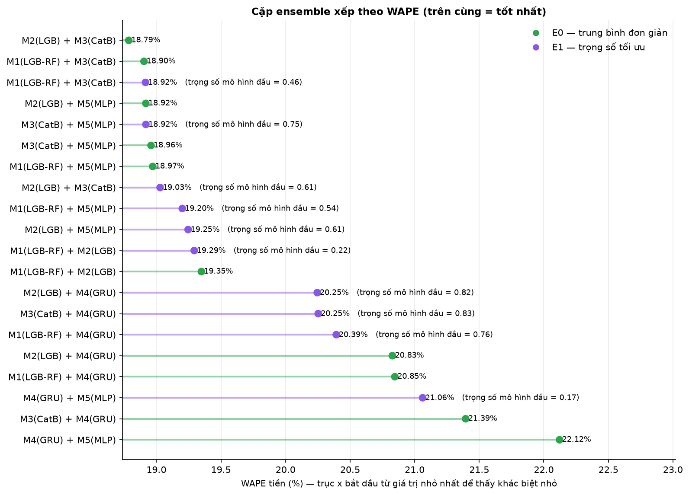
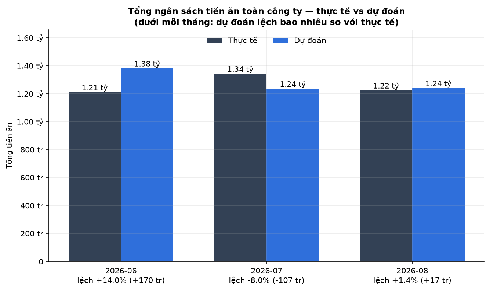
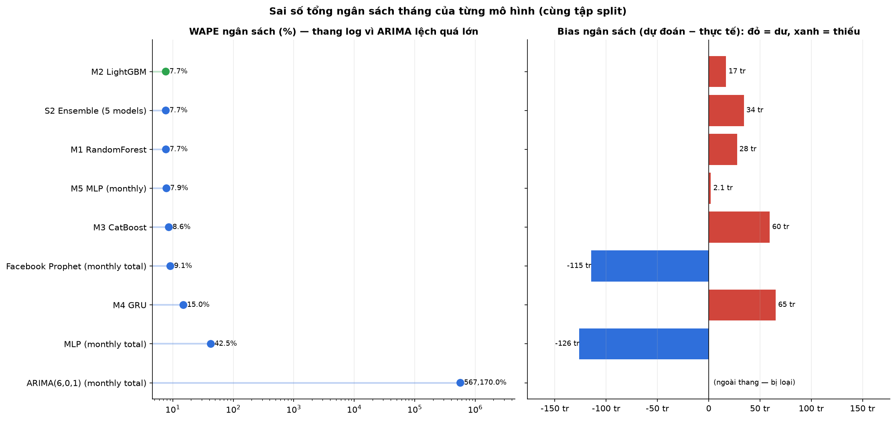
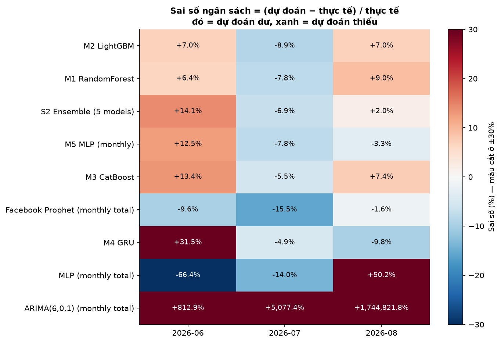
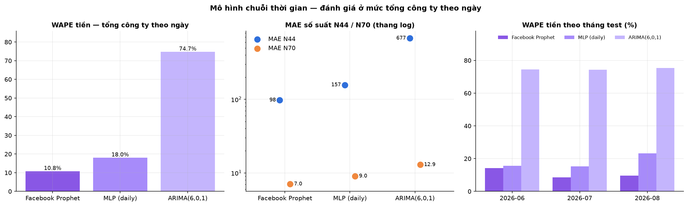
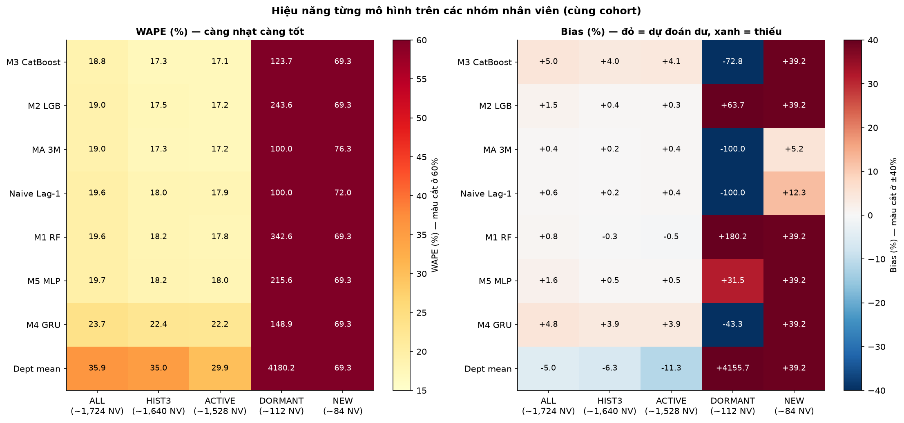
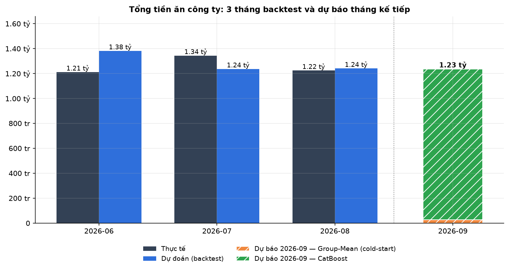

Kết quả pipeline dự báo tiền ăn
Các cặp ensemble (E0 trung bình đơn / E1 trọng số tối ưu)

Ngân sách công ty: thực tế vs dự đoán theo tháng

So sánh mô hình theo sai số ngân sách (cùng split)

Heatmap sai số ngân sách (%) theo mô hình × tháng

Mô hình chuỗi thời gian (Prophet / MLP daily / ARIMA)

So sánh mô hình theo cohort (ALL/HIST3/ACTIVE/DORMANT/NEW)

Xu hướng ngân sách: thực tế, dự đoán và dự báo tháng tới
